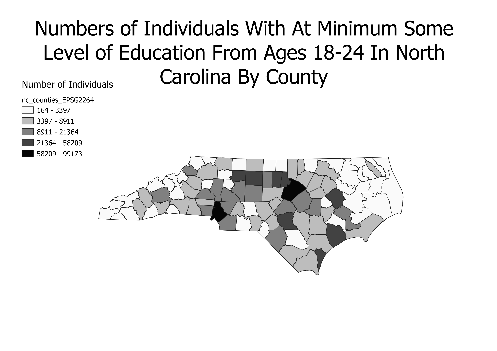

This is a chloropleth of North Carolina that displays the number of people age 18-24 who have achieved at minimum some level of education, starting at "less than a high school diploma," all the way to postdoctorate, by county.
 Link to CSV File Link to Shapefile